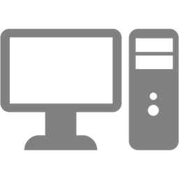
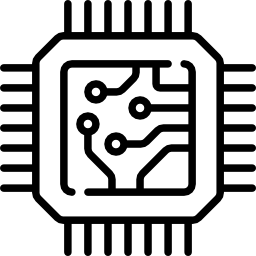

TECH HUB
Dobrodošli v TechHubu, vaši najboljši destinaciji za vse, kar se tiče tehnologije!
Ne glede na to, ali ste izkušen navdušenec nad tehnologijo ali radoveden začetnik, je
naša spletna stran zasnovana kot vaša osrednja vodilna točka za raziskovanje vedno
spreminjajočega se sveta tehnologije. Od najnovejših naprav in revolucionarnih inovacij
do celovitih navodil in informativnih pregledov izdelkov - tukaj smo, da vas opremimo z
znanjem in strokovnostjo, potrebno za sprejemanje informiranih odločitev in ostajanje korak
pred drugimi v digitalni dobi.
Pridružite se nam pri raziskovanju fascinantnega področja
tehnologije, razpletenju njenih kompleksnosti in odkrivanju njenega neskončnega potenciala.
Pripravite se na vznemirljivo potovanje odkrivanja, kjer postane TechHub vaš zaupanja vredni spremljevalec v hitrem svetu tehnologije.

Zaposleni skrbno izbirajo vse računalnike in periferijo za vas.

Primerjava računalniških komponent.
Uporabnikom prijazna stran.
Naša ekipa
TechHub ekipa je sestavljena iz treh strastnih in izkušenih članov, ki so posvečeni zagotavljanju vrhunskih vsebin in informacij o tehnologiji:

Marko Novak - Ustanovitelj in urednik: Marko je tehnološki navdušenec z dolgoletnimi izkušnjami v svetu tehnologije. S svojim globokim razumevanjem področja skrbi za kakovostne vsebine in zagotavlja, da TechHub ostaja vir relevantnih in koristnih informacij za uporabnike.

Ana Kovačič - Pisateljica in strokovnjakinja za vodiče: Ana je talentirana pisateljica, ki s svojim izjemnim znanjem in izkušnjami na področju tehnologije ustvarja izčrpne vodiče. Njeni članki so jasni, informativni in prilagojeni različnim ravni uporabnikov, da bi jim pomagali izkoristiti največ iz tehnoloških inovacij.

Peter Horvat - Strokovnjak za preglede in teste izdelkov: Peter je izkušen strokovnjak, specializiran za preglede in teste tehnoloških izdelkov. Njegove objektivne ocene in natančni testi omogočajo uporabnikom, da se odločijo za najboljše možnosti glede na njihove potrebe in proračun.
Skupaj delujejo kot združena ekipa, ki si prizadeva zagotoviti ažurne in zanesljive informacije ter uporabnikom nuditi odlično izkušnjo na TechHub spletni strani. S svojim strokovnim znanjem in strastjo do tehnologije, TechHub ekipa zagotavlja, da ste vedno korak pred tehnološkimi trendi.